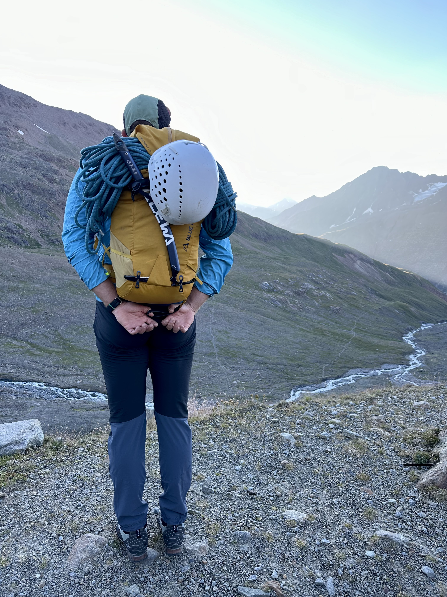

Ich bin Berufsschullehrer, Technikdidaktiker und Berufspädagoge. Mit Leidenschaft arbeite ich an der Schnittstelle von Wissenschaft & Praxis – immer mit dem Ziel, Berufliche Bildung zukunftsfähig, praxisnah und humanzentriert zu gestalten und Brücken zu bauen.
Berufliche Bildung ist für mich weit mehr als graue Theorie oder reine Praxis: Ich denke sie in lebendiger, symbiotischer Verbindung. Dabei verknüpfe ich technikdidaktische, berufspädagogische und berufliche Perspektiven und stelle immer wieder die Frage: Was muss der Mensch und was kann KI hier leisten, und wo stoßen wir an Grenzen? Als Lehrkraft an der Staatlichen Berufsschule 1 Bayreuth und gleichzeitig Forschungs- und Lehrbeauftragter für Technikdidaktik an der Universität Bayreuth lebe ich diese Verzahnung tagtäglich. An unserer Universitätsberufsschule wird so aus einem oft geforderten Anspruch gelebte Realität.
KI in der Beruflichen Bildung, Kompetenzentwicklung, Lehrkräftebildung und qualitätsorientierte Schulentwicklung – das sind die Themen, die mich antreiben. Aktuell beschäftige ich mich besonders damit, wie die unterschiedlichsten Bereiche der Beruflichen Bildung neu gedacht werden müssen, um Digitalisierung und KI nicht nur „mitzunehmen“, sondern wirklich sinnvoll zu integrieren.

Wenn ich nicht gerade Bildungskonzepte entwerfe oder den KI-Einsatz weiterentwickle und teste, zieht es mich hinauf in die Berge. Dort finde ich nicht nur Ausgleich und Stille, sondern auch eine wohltuende Distanz zum drängenden Alltag. In klarer Luft und vor gewaltiger Kulisse beginnen sich Gedanken neu zu sortieren. Viele Ideen, die später ihren Weg in meine Arbeit finden, werden genau hier geboren – irgendwo zwischen Fels und Himmel. Was mich am Bergsteigen so fasziniert, gleicht dem, was auch gute Bildung braucht: Weitblick und die Bereitschaft, die Perspektive zu wechseln. Trittsicherheit auf unbekanntem Terrain. Geduld und Ausdauer, einen langen Weg mit vielen kleinen Schritten zu gehen. Und den Mut, immer wieder neue, manchmal steile Pfade zu wagen. Oft sind es gerade die anspruchsvollen Passagen, die am meisten lehren. Und dieses Gefühl, schließlich oben zu stehen, zurückzublicken und den gesamten Weg in seiner Vielfalt zu sehen, erinnert mich daran, wie lohnend es ist, Bildung langfristig, mit Augenmaß und dem Menschen im Mittelpunkt zu denken und umzusetzen.
Für Austausch, Vorträge, Workshops sowie Forschungs- und Entwicklungskooperationen bin ich gern ansprechbar.